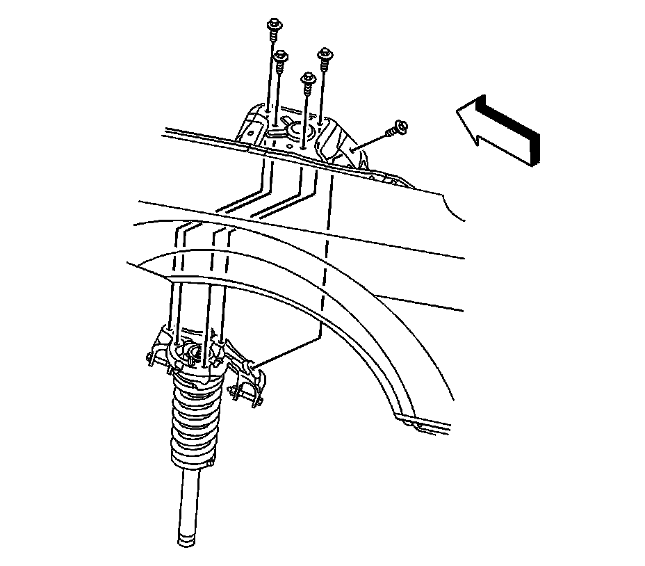

Shock Module Replacement
Shock Module Replacement
Tools Required
J 24319-B Steering Linkage and Tie Rod Puller
Removal Procedure
1. Raise and support the vehicle. Refer to Lifting and Jacking the Vehicle (Service and Repair) .
2. Remove the tire and wheel. Refer to Tire and Wheel Removal and Installation (Service and Repair) .
3. Remove the shock yoke. Refer to Shock Module Yoke Replacement (Shock Module Yoke Replacement) .
4. Vehicles equipped with electronic suspension control (ESC), or automatic headlamp aiming, disconnect the suspension position sensor link rod from the upper control arm .
Notice: The ball stud must not rotate during disassembly or reassembly. Hand tools must be used to keep the ball stud from rotating. If air tools are used and the stud is allowed to rotate, damage to the ball stud and/or stud mounting hole may occur.
Important: Hold the upper control arm to the steering knuckle when removing the retaining nut.

Important: To prevent the ball stud from slipping, insert a hex-head tool while removing the upper control arm-to-steering knuckle nut.
5. Remove the upper control arm to steering knuckle nut.
6. Use the J 24319-B to separate the upper control arm from the steering knuckle.
7. Lower the vehicle.
8. Vehicles equipped with ESC, disconnect the damper coil harness connector.

9. Remove the shock module upper mounting bolts.
10. Remove the shock module from the vehicle.
Installation Procedure
1. Install the shock module to the vehicle.
Notice: Refer to Fastener Notice (Fastener Notice) .
2. Install the shock module upper mounting bolts.
Tighten the bolts to 112 N.m (83 lb ft).
3. Vehicles equipped with ESC, connect the damper coil harness connector.
4. Raise the vehicle.
5. Install the upper control arm to the steering knuckle.
6. Install the upper control arm to steering knuckle retaining nut.
Tighten the nut to 80 N.m (59 lb ft).
7. Vehicles equipped with ESC, or automatic headlamp aiming, connect the suspension position sensor link rod to the upper control arm .
8. Install the shock yoke. Refer to Shock Module Yoke Replacement (Shock Module Yoke Replacement) .
9. Install the shock to the yoke.
10. Install the tire and wheel. Refer to Tire and Wheel Removal and Installation (Service and Repair) .
11. Lower the vehicle.